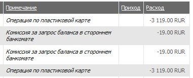

То, что снимать деньги нужно только в «своем» банкомате мне, конечно известно. Собственно я, их при необходимости всегда и снимал в банкоматах Альфа-банка.
Но сегодня торопился. Заехал в «Променад-3», подошел к банкомату Альфы. Около банкомата тупит девушка. Беспорядочно нажимает кнопки, хочет заплатить кредит, а не может. Не хватает у нее квалификации в оплате кредита. Постоял пару минут. Помогать не решился, уж очень у нее взгляд был отрешенный (наверное, шубу в кредит взяла). И тут вспомнил слова одного друга, который сказал, что деньги сейчас можно снимать практически в любом банкомате (дополнительная комиссия не берется).
У входа в «Променад-3» в Кемерово стоит банкомат Росбанка. Подхожу (нервничаю, конечно, из-за нерасторопности девушки). Вставляю в банкомат карточку. Выбираю счет, «снять наличные». Приятная надпись — «Дополнительная комиссия - 0%». Ну, думаю — хорошо ведь. Там еще счета по-другому называются. Проверил баланс пару раз. Снял деньги. 2 раза по 3 тысячи (все что нажито).
Сажусь в машину. Приходит СМС. Из СМС понятно, что в банкомате кто-то не прав. Цифры явно не круглые, рассматривать некогда, но подозрения закрались.
Вечером захожу в Альфа-клик.

Ну думаю вот ведь, обманул Росбанк, написал одно, сделал другое. Набираю телефон саппорта Альфабанка, чтобы точно быть уверенным в своих загадках. Но любезный саппорт сомнения мои быстро развеял. Комиссию взял не сторонний Росбанк, а выпустивший карту Альфабанк, чьим собственно клиентом я и являюсь.
Наверняка цена снятия обозначена в договоре. Наверняка эта информация есть на оф. сайте. Но осадочек, как говорится, остался.